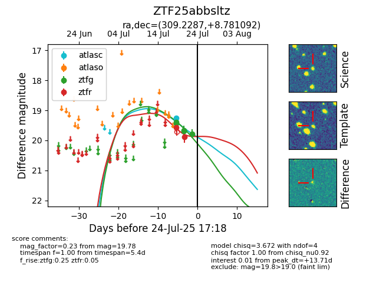

Target ZTF25abbsltz at 2025-07-24 17:18, see:
FINK: fink-portal.org/ZTF25abbsltz
Lasair: lasair-ztf.lsst.ac.uk/objects/ZTF25abbsltz
ALeRCE: alerce.online/object/ZTF25abbsltz
alt names
ZTF25abbsltz (ztf,fink)
coordinates:
equatorial (ra, dec) = (309.2287,+8.78109)
galactic (l, b) = (53.7131,-18.72629)
photometry
last atlasc=19.26, ztfg=19.78, ztfr=19.88
1 atlasc, 5 ztfg, 2 ztfr detections
